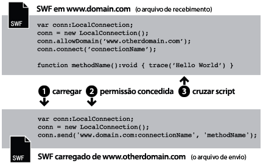
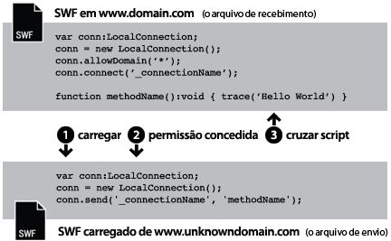
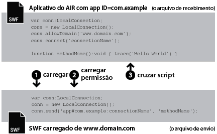
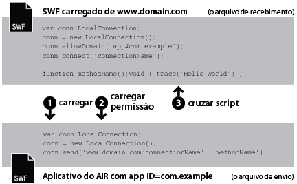
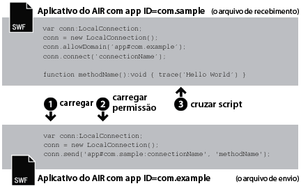

| Pacote | flash.net |
| Classe | public class LocalConnection |
| Herança | LocalConnection |
| Versão da linguagem: | ActionScript 3.0 |
| Versões de runtime: | AIR 1.0, Flash Player 9, Flash Lite 4 |
- Em um único arquivo SWF
- Entre vários arquivos SWF
- Entre o conteúdo (com base em SWF ou HTML) nos aplicativos AIR
- Entre o conteúdo (com base em SWF ou HTML) nos aplicativos AIR e o conteúdo SWF em execução em um navegador.
Suporte a perfil do AIR: este recurso conta com suporte em todos os sistemas operacionais de área de trabalho e em todos os dispositivos AIR for TV, mas não é compatível com dispositivos móveis. Você pode testar o suporte que em tempo de execução utilizando a propriedadeLocalConnection.isSupported. Consulte Suporte a perfil do AIR para obter mais informações sobre o suporte de API através de múltiplos perfis.
Nota: os dispositivos AIR for TV oferecem suporte a comunicação somente entre o conteúdo baseado em SWF em aplicativos AIR.
Conexões locais permitem esse tipo de comunicação entre arquivos SWF sem o uso de fscommand() ou JavaScript. Objetos LocalConnection apenas podem se comunicar entre arquivos em execução no mesmo computador cliente, mas podem estar em execução em diferentes aplicativos; por exemplo, um arquivo SWF em execução no Adobe AIR.
Objetos LocalConnection criados no ActionScript 3.0 podem se comunicar com objetos LocalConnection criados no ActionScript 1.0 ou 2.0. O inverso também é válido: Objetos LocalConnection criados no ActionScript 1.0 ou 2.0 podem se comunicar com objetos LocalConnection criados no ActionScript 3.0. O Flash Player manipula automaticamente essa comunicação entre objetos LocalConnection de diferentes versões.
Há três maneiras de adicionar métodos de retorno de chamada aos objetos LocalConnection:
- Criar subclasse da classe LocalConnection e adicionar métodos.
- Definir a propriedade
LocalConnection.clientcomo um objeto que implementa os métodos. - Criar uma classe dinâmica que estende o LocalConnection e anexar métodos dinamicamente.
Para compreender como usar objetos LocalConnection de modo a implementar a comunicação entre dois arquivos, é útil identificar os comandos usados em cada arquivo. Um arquivo é chamado de arquivo de recebimento e é o arquivo que contém o método a ser invocado. O arquivo de recebimento deve conter outro objeto LocalConnection e uma chamada ao método connect(). O outro arquivo é chamado de arquivo de envio e é o arquivo que invoca o método. O arquivo de envio deve conter outro objeto LocalConnection e uma chamada ao método send().
O seu uso de send() e connect() é diferente dependendo de os arquivos estarem no mesmo domínio, em domínios diferentes com nomes de domínio previsíveis ou em domínios diferentes com nomes de domínio imprevisíveis ou dinâmicos. Os parágrafos a seguir explicam as três diferentes situações, com amostras de código para cada uma.
Mesmo domínio. Essa é a maneira mais simples de usar um objeto LocalConnection, para permitir a comunicação apenas entre objetos LocalConnection localizados no mesmo domínio, porque a comunicação no mesmo domínio é permitida por padrão. Quando dois arquivos do mesmo domínio se comunicam, você não precisa implementar medidas especiais de segurança e simplesmente transmite o mesmo valor para o parâmetro connectionName aos métodos connect() e send():

// receivingLC is in http://www.domain.com/receiving.swf
receivingLC.connect('myConnection');
// sendingLC is in http://www.domain.com/sending.swf
// myMethod() is defined in sending.swf
sendingLC.send('myConnection', 'myMethod');
Domínios diferentes com nomes de domínio previsíveis. Quando dois arquivos SWF de diferentes domínios se comunicam, você precisa permitir a comunicação entre os domínios chamando o método allowDomain(). Também é necessário qualificar o nome da conexão no método send() com o nome de domínio do objeto LocalConnection de recebimento:

// receivingLC is in http://www.domain.com/receiving.swf
receivingLC.allowDomain('www.anotherdomain.com');
receivingLC.connect('myConnection');
// sendingLC is in http://www.anotherdomain.com/sending.swf
sendingLC.send('www.domain.com:myConnection', 'myMethod');
Domínios diferentes com nomes de domínio imprevisíveis. Às vezes, é possível criar o arquivo com o objeto LocalConnection de recebimento mais durável entre domínios. Para evitar especificar o nome do domínio no método send(), mas para indicar que os objetos LocalConnection de envio e recebimento não estão no mesmo domínio, preceda o nome da conexão com um sublinhado (_) em ambas as chamadas connect() e send(). Para permitir a comunicação entre os dois domínios, chame o método allowDomain() e transmita os domínios a partir dos quais você deseja permitir chamadas LocalConnection. Como alternativa, transmita o argumento caractere curinga (*) para permitir chamadas de todos os domínios:

// receivingLC is in http://www.domain.com/receiving.swf
receivingLC.allowDomain('*');
receivingLC.connect('_myConnection');
// sendingLC is in http://www.anotherdomain.com/sending.swf
sendingLC.send('_myConnection', 'myMethod');
Do Flash Player para um aplicativo AIR. Um objeto LocalConnection criado na caixa de segurança do aplicativo AIR usa uma string especial como seu prefixo de conexão, em vez de um nome de domínio. Esta string tem o formato: app#appID.pubID, onde appID é o ID do aplicativo e pubID é o ID do publicador do ID do aplicativo. (Só inclua o ID do publicador se o aplicativo AIR usar um ID do publicador.) Por exemplo, se um aplicativo AIR tiver um ID do aplicativo "com.example" e nenhum ID do publicador, você poderá usar: app#com.example:myConnection como a string da conexão local. O aplicativo AIR também deve chamar o método allowDomain(), enviando na chamada o domínio do arquivo SWF de origem:

// receivingLC is an AIR application with app ID = com.example (and no publisher ID)
receivingLC.allowDomain('www.domain.com');
receivingLC.connect('myConnection');
// sendingLC is in http://www.domain.com/sending.swf
sendingLC.send('app#com.example:myConnection', 'myMethod');
Nota: se um aplicativo AIR carregar um SWF fora da área de segurança do aplicativo AIR, as regras para estabelecer uma conexão local com esse SWF serão iguais à regras para estabelecer uma conexão com um SWF que esteja executando no Flash Player.
Do aplicativo AIR para o Flash Player. Quando o aplicativo AIR se comunica com um SWF que está executando no tempo de execução do Flash Player, você precisa permitir uma comunicação entre os dois chamando o método allowDomain() e enviando o prefixo de conexão do aplicativo AIR. Por exemplo, se um aplicativo AIR tiver um ID de aplicativo "com.example" e nenhum ID de publicador, você poderá passar a string: app#com.example para o método allowDomain(). Também é necessário qualificar o nome da conexão no método send() com o nome de domínio do objeto LocalConnection receptor (use "localhost" como o domínio de arquivos SWF carregados de um sistema de arquivos local):

// receivingLC is in http://www.domain.com/receiving.swf
receivingLC.allowDomain('app#com.example');
receivingLC.connect('myConnection');
// sendingLC is an AIR application with app ID = com.example (and no publisher ID)
sendingLC.send('www.domain.com:myConnection', 'myMethod');
Do aplicativo AIR para outro aplicativo AIR. Para a comunicação entre dois aplicativos AIR, você precisa permitir a comunicação entre os dois chamando o método allowDomain() e enviando o prefixo de conexão do aplicativo AIR que estiver enviando os dados. Por exemplo, se um aplicativo AIR tiver um ID de aplicativo "com.example" e nenhum ID de publicador, você poderá passar a string: app#com.example para o método allowDomain() no aplicativo receptor. Também é necessário qualificar o nome da conexão no método send() com o prefixo de conexão do objeto LocalConnection receptor:

// receivingLC is an AIR application with app ID = com.sample (and no publisher ID)
receivingLC.allowDomain('app#com.example');
receivingLC.connect('myConnection');
// sendingLC is an AIR application with app ID = com.example (and no publisher ID)
sendingLC.send('app#com.sample:myConnection', 'myMethod');
Você pode usar objetos LocalConnection para enviar e receber dados em um único arquivo, mas essa não é uma implementação típica.
Para obter mais informações sobre os métodos send() e connect(), consulte a discussão do parâmetro connectionName nas entradas LocalConnection.send() e LocalConnection.connect(). Além disso, consulte as entradas allowDomain() e domain.
Elementos da API relacionados
flash.net.LocalConnection.allowDomain()
flash.net.LocalConnection.domain
 Ocultar propriedades públicas herdadas
Ocultar propriedades públicas herdadas Mostrar propriedades públicas herdadas
Mostrar propriedades públicas herdadas| Propriedade | Definido por | ||
|---|---|---|---|
| client : Object
Indica o objeto no qual os métodos de retorno de chamada são invocados. | LocalConnection | ||
 | constructor : Object
Uma referência ao objeto de classe ou à função de construtor de uma determinada ocorrência de objeto. | Object | |
| domain : String [somente leitura]
Uma string que representa o domínio da localização do arquivo atual. | LocalConnection | ||
| isPerUser : Boolean
Indica se o objeto LocalConnection está no escopo do usuário atual (true) ou é globalmente acessível a todos os usuários do computador (false). | LocalConnection | ||
| isSupported : Boolean [estático] [somente leitura]
A propriedade isSupported será definida como true se a classe LocalConnection for suportada na plataforma atual; de outra maneira, ela será definida como false. | LocalConnection | ||
| Método | Definido por | ||
|---|---|---|---|
Cria um objeto LocalConnection. | LocalConnection | ||
| addEventListener(type:String, listener:Function, useCapture:Boolean = false, priority:int = 0, useWeakReference:Boolean = false):void
Registra um objeto de ouvinte de evento em um objeto EventDispatcher, de forma que o ouvinte receba a notificação de um evento. | EventDispatcher | |
Especifica um ou mais domínios que podem enviar chamadas LocalConnection a esta ocorrência de LocalConnection. | LocalConnection | ||
Especifica um ou mais domínios que podem enviar chamadas LocalConnection a este objeto LocalConnection. | LocalConnection | ||
Fecha (desconecta) um objeto LocalConnection. | LocalConnection | ||
Prepara um objeto LocalConnection para receber comandos que são despachados de um comando send() (do objeto LocalConnection de envio). | LocalConnection | ||
|
Envia um evento para o fluxo de eventos. | EventDispatcher | |
|
Verifica se o objeto EventDispatcher tem ouvintes registrados para um tipo específico de evento. | EventDispatcher | |
|
Indica se um objeto tem uma propriedade especificada definida. | Object | |
|
Indica se uma ocorrência da classe Object está na cadeia de protótipos do objeto especificado como o parâmetro. | Object | |
|
Indica se a propriedade especificada existe e é enumerável. | Object | |
|
Remove um ouvinte do objeto EventDispatcher. | EventDispatcher | |
Invoca o método denominado methodName em uma conexão aberta com o método connect(connectionName) (no objeto LocalConnection de recebimento). | LocalConnection | ||
|
Define a disponibilidade de uma propriedade dinâmica para operações de repetição. | Object | |
|
Retorna a representação da string deste objeto, formatado segundo as convenções específicas para a localidade. | Object | |
|
Retorna a representação de string do objeto especificado. | Object | |
|
Retorna o valor primitivo do objeto especificado. | Object | |
|
Verifica se um ouvinte de evento está registrado nesse objeto EventDispatcher ou em qualquer um de seus ancestrais para o tipo de evento especificado. | EventDispatcher | |
| Evento | Resumo | Definido por | ||
|---|---|---|---|---|
| [transmissão de evento] Despachado quando o Flash Player ou o aplicativo do AIR ganha o foco do sistema operacional e está se tornando inativo. | EventDispatcher | ||
| Despachado quando uma exceção é lançada assincronamente – ou seja, a partir do código assíncrono nativo. | LocalConnection | |||
| [transmissão de evento] Despachado quando o Flash Player ou o aplicativo do AIR perde o foco do sistema operacional e está se tornando inativo. | EventDispatcher | ||
| Despachado se uma chamada para LocalConnection.send() tentar enviar dados a uma área de segurança diferente. | LocalConnection | |||
| Despachado quando um objeto LocalConnection relata seu status. | LocalConnection | |||
client | propriedade |
client:Object| Versão da linguagem: | ActionScript 3.0 |
| Versões de runtime: | AIR 1.0, Flash Player 9, Flash Lite 4 |
Indica o objeto no qual os métodos de retorno de chamada são invocados. O objeto padrão é this, a conexão local que está sendo criada. É possível definir a propriedade client como outro objeto e os métodos de retorno de chamada são invocados nesse outro objeto.
Implementação
public function get client():Object public function set client(value:Object):voidLança
TypeError — A propriedade client deve ser definida como um objeto não nulo.
|
domain | propriedade |
domain:String [somente leitura] | Versão da linguagem: | ActionScript 3.0 |
| Versões de runtime: | AIR 1.0, Flash Player 9, Flash Lite 4 |
Uma string que representa o domínio da localização do arquivo atual.
No conteúdo em execução na área de segurança application no Adobe AIR (conteúdo instalado com o AIR), o tempo de execução usa a string app#seguida pela ID do aplicativo para o AIR (definido no arquivo descritivo) no lugar do superdomínio. Por exemplo, um connectionName para um aplicativo com a ID com.example.air.MyApp connectionName resolve para "app#com.example.air.MyApp:connectionName".
Em arquivos SWF publicados para o Flash Player 9 ou posterior, a string retornada é o domínio exato do arquivo, incluindo subdomínios. Por exemplo, se o arquivo estiver localizado em www.adobe.com, esse comando retornará "www.adobe.com".
Se o arquivo atual for um arquivo local que reside no computador cliente em execução no Flash Player, esse comando retornará "localhost".
As maneiras mais comuns de usar essa propriedade são incluir o nome de domínio do objeto LocalConnection de envio como um parâmetro no método que você planeja invocar no objeto LocalConnection de recebimento ou usá-lo com LocalConnection.allowDomain() para aceitar comandos de um domínio especificado. Se você estiver ativando a comunicação apenas entre objetos LocalConnection localizados no mesmo domínio, provavelmente não precisará usar essa propriedade.
Implementação
public function get domain():StringElementos da API relacionados
isPerUser | propriedade |
isPerUser:Boolean| Versão da linguagem: | ActionScript 3.0 |
| Versões de runtime: | Flash Player 10.0.32, AIR 1.5.2 |
Indica se o objeto LocalConnection está no escopo do usuário atual (true) ou é globalmente acessível a todos os usuários do computador (false). Esta propriedade só afeta a execução de conteúdo no Mac OS X; outras plataformas ignoram este parâmetro. As conexões em sistemas operacionais Windows e Linux são sempre por usuário.
No Flash Player 10.0.22 e versões anteriores e no AIR 1.5.1 e versões anteriores, todos os objetos LocalConnection no Mac OS X têm um alcance global. Sempre estabeleça esta propriedade como true, a menos que você tenha de preservar a compatibilidade com versões anteriores. Em futuros lançamentos, o valor padrão desta propriedade poderia modificar-se para true.
O valor padrão é false.
Implementação
public function get isPerUser():Boolean public function set isPerUser(value:Boolean):voidisSupported | propriedade |
isSupported:Boolean [somente leitura] | Versão da linguagem: | ActionScript 3.0 |
| Versões de runtime: | Flash Player 10.1, AIR 2 |
A propriedade isSupported será definida como true se a classe LocalConnection for suportada na plataforma atual; de outra maneira, ela será definida como false.
Implementação
public static function get isSupported():BooleanLocalConnection | () | Construtor |
public function LocalConnection()| Versão da linguagem: | ActionScript 3.0 |
| Versões de runtime: | AIR 1.0, Flash Player 9, Flash Lite 4 |
Cria um objeto LocalConnection. É possível usar objetos LocalConnection para permitir a comunicação entre diferentes arquivos em execução no mesmo computador cliente.
Elementos da API relacionados
allowDomain | () | método |
public function allowDomain(... domains):void| Versão da linguagem: | ActionScript 3.0 |
| Versões de runtime: | AIR 1.0, Flash Player 9, Flash Lite 4 |
Especifica um ou mais domínios que podem enviar chamadas LocalConnection a esta ocorrência de LocalConnection.
Esse método não pode ser usado para permitir que arquivos hospedados com o uso de um protocolo seguro (HTTPS) tenham acesso a partir de arquivos hospedados em protocolos não seguros. Para tanto, use o método allowInsecureDomain().
Convém usar esse método para que um arquivo filho de um domínio diferente possa fazer chamadas LocalConnection locais ao arquivo pai, sem conhecer o domínio final a partir do qual o arquivo filho surgirá. Isso pode acontecer, por exemplo, quando você usa redirecionamentos de balanceamento de carga ou servidores terceirizados. Nessa situação, você pode usar a propriedade url do objeto LoaderInfo usado com o carregamento, para obter o domínio a ser usado com o método allowDomain(). Por exemplo, se você usar um objeto Loader para carregar um arquivo filho, quando o arquivo estiver carregado, será possível verificar a propriedade contentLoaderInfo.url desse objeto Loader e analisar o domínio fora da string URL completa. Se você não fizer isso, certifique-se de aguardar a conclusão do carregamento do arquivo, uma vez que a propriedade contentLoaderInfo.url apenas terá seu valor final correto quando o arquivo estiver totalmente carregado.
A situação oposta também pode ocorrer: você pode criar um objeto filho que deseja aceitar chamadas LocalConnection a partir do seu pai, mas que não conhece o domínio desse pai. Nessa situação, implemente esse método verificando se o argumento de domínio corresponde ao domínio da propriedade loaderInfo.url no arquivo carregado. Mais uma vez, é necessário analisar o domínio fora da URL completa a partir de loaderInfo.url. Nessa situação, não é necessário aguardar o carregamento do arquivo pai; o pai já terá sido carregado na ocasião em que o filho for carregado.
Ao usar esse método, considere o modelo de segurança do Flash Player. Por padrão, um objeto LocalConnection é associado à caixa de proteção do arquivo que o criou e chamadas entre domínios a objetos LocalConnection não são permitidas, a não ser que você chame o método LocalConnection.allowDomain() no arquivo de recebimento. Contudo, no Adobe AIR, o conteúdo na caixa de proteção de segurança application (conteúdo instalado com o Adobe AIR) não é restringido por essas limitações de segurança.
Para obter mais informações relacionadas à segurança, consulte o tópico do Centro dos desenvolvedores do Flash Player Security.
Observação: A forma do método allowDomain() foi alterado a partir do ActionScript 1.0 e 2.0. Nessas versões anteriores, allowDomain era um método de retorno de chamada que você implementava. No ActionScript 3.0, allowDomain() é um método embutido de LocalConnection que você chama. Com essa alteração, allowDomain() funciona da mesma maneira que flash.system.Security.allowDomain().
Parâmetros
... domains — Uma ou mais strings que nomeiam os domínios a partir dos quais você deseja permitir chamadas LocalConnection. Esse parâmetro tem dois casos especiais:
|
Lança
ArgumentError — Todos os parâmetros especificados devem ser strings diferentes de "null".
|
Elementos da API relacionados
allowInsecureDomain | () | método |
public function allowInsecureDomain(... domains):void| Versão da linguagem: | ActionScript 3.0 |
| Versões de runtime: | AIR 1.0, Flash Player 9, Flash Lite 4 |
Especifica um ou mais domínios que podem enviar chamadas LocalConnection a este objeto LocalConnection.
O método allowInsecureDomain() funciona como o método allowDomain(), com a exceção de que o método allowInsecureDomain() permite adicionalmente que arquivos de origens não HTTPS enviem chamadas LocalConnection a arquivos SWF de origens HTTPS. Essa diferença apenas será significativa se você chamar o método allowInsecureDomain() a partir de um arquivo que foi carregado usando HTTPS. Será necessário chamar o método allowInsecureDomain() mesmo que você esteja atravessando um limite não HTTPS/HTTPS dentro do mesmo domínio; por padrão, chamadas LocalConnection nunca são permitidas a partir de arquivos não HTTPS para arquivos HTTPS, mesmo dentro do mesmo domínio.
Não convém chamar allowInsecureDomain(), uma vez que isso pode comprometer a segurança oferecida pelo HTTPS. Ao carregar um arquivo via HTTPS, você tem a garantia de que esse arquivo não será adulterado durante a entrega via rede. Se você permitir que um arquivo não HTTPS faça chamadas LocalConnection para o arquivo HTTPS, estará aceitando chamadas de um arquivo que, de fato, pode ter sido adulterado durante a entrega. Isso geralmente requer uma vigilância extra, já que não é possível confiar na autenticidade de chamadas LocalConnection que chegam ao seu arquivo HTTPS.
Por padrão, os arquivos hospedados com o uso do protocolo HTTPS apenas podem ser acessados por outros arquivos hospedados com o protocolo HTTPS. Essa implementação mantém a integridade fornecida pelo protocolo HTTPS.
O uso deste método para substituir o comportamento padrão não é recomendado, pois ele compromete a segurança HTTPS. Entretanto, talvez seja necessário fazer isso, por exemplo, se você precisar permitir acesso a arquivos SWF HTTPS publicados para o Flash Player 9 ou posterior a partir de arquivos SWF HTTP publicados para o Flash Player 6 ou anterior.
Para obter mais informações relacionadas à segurança, consulte o tópico do Centro dos desenvolvedores do Flash Player Security.
Parâmetros
... domains — Uma ou mais strings que nomeiam os domínios a partir dos quais você deseja permitir chamadas LocalConnection. Há dois casos especiais para esse parâmetro:
|
Lança
ArgumentError — Todos os parâmetros especificados devem ser strings diferentes de "null".
|
Elementos da API relacionados
close | () | método |
public function close():void| Versão da linguagem: | ActionScript 3.0 |
| Versões de runtime: | AIR 1.0, Flash Player 9, Flash Lite 4 |
Fecha (desconecta) um objeto LocalConnection. Emita esse comando quando você não quiser mais que o objeto aceite comandos; por exemplo, quando quiser emitir um comando connect() usando o mesmo parâmetro connectionName em outro arquivo SWF.
Lança
ArgumentError — A ocorrência de LocalConnection não é conectada e, portanto, não pode ser encerrada.
|
Elementos da API relacionados
connect | () | método |
public function connect(connectionName:String):void| Versão da linguagem: | ActionScript 3.0 |
| Versões de runtime: | AIR 1.0, Flash Player 9, Flash Lite 4 |
Prepara um objeto LocalConnection para receber comandos que são despachados de um comando send() (do objeto LocalConnection de envio). O objeto usado com o método connect() é chamado de objeto LocalConnection de recebimento. Os objetos de envio e recebimento devem estar em execução no mesmo computador cliente.
Para evitar uma condição de risco, defina os métodos anexados ao objeto LocalConnection de recebimento antes de chamar esse método, como mostra o exemplo da classe LocalConnection.
Por padrão, o argumento connectionName é resolvido em um valor de "superdomain:connectionName", em que superdomain é o superdomínio do arquivo que contém o comando connect(). Por exemplo, se o arquivo que contém o objeto LocalConnection de recebimento localizado em www.someDomain.com, connectionName é resolvido como "someDomain.com:nomeConexão". (Se um arquivo em execução no Flash Player estiver localizado no computador cliente, o valor atribuído a superdomain será "localhost".)
No conteúdo em execução na área de segurança application no Adobe AIR (conteúdo instalado com o AIR), o tempo de execução usa a string app#seguida pela ID do aplicativo para o AIR (definido no arquivo descritivo) no lugar do superdomínio. Por exemplo, um connectionName para um aplicativo com a ID com.example.air.MyApp connectionName resolve para "app#com.example.air.MyApp:connectionName".
Além disso, por padrão, o Flash Player permite que o objeto LocalConnection de recebimento aceite comandos apenas de objetos LocalConnection de envio cujo nome de conexão também seja resolvido em um valor de "superdomain:connectionName". Dessa maneira, o Flash Player simplifica a comunicação entre arquivos localizados no mesmo domínio.
Se você estiver implementando a comunicação apenas entre arquivos no mesmo domínio, especifique uma string para connectionName que não comece com um sublinhado (_) e que não determine um nome de domínio (por exemplo, "myDomain:nomeConexão"). Use a mesma string no método connect(connectionName).
Se você estiver implementando a comunicação entre arquivos em diferentes domínios, especificar uma string para connectionName que comece com um sublinhado (_) torna o arquivo com o objeto LocalConnection de recebimento mais durável entre domínios. Estes são os dois casos possíveis:
- Se a string para
connectionNamenão começar com um sublinhado (_), um prefixo é adicionado com o superdomínio e um caractere de dois pontos (por exemplo,"myDomain:connectionName"). Embora isso garanta que a sua conexão não entre em conflito com as conexões de nome idêntico em outros domínios, qualquer objeto LocalConnection de envio deve especificar esse superdomínio (por exemplo,"myDomain:connectionName"). Se o arquivo com o objeto LocalConnection de recebimento for movido para outro domínio, o player alterará o prefixo de modo a refletir o novo superdomínio (por exemplo,"anotherDomain:connectionName"). Todos os objetos LocalConnection de envio precisariam ser manualmente editados de modo a apontar para o novo superdomínio. - Se a string para
connectionNamecomeçar com um sublinhado (por exemplo,"_connectionName"), um prefixo não será adicionado. Isso significa que os objetos LocalConnection de recebimento e envio usam strings idênticas paraconnectionName. Se o objeto de recebimento usarallowDomain()para especificar que serão aceitas conexões de qualquer domínio, o arquivo com o objeto LocalConnection de recebimento poderá ser movido para outro domínio sem alterar qualquer objeto LocalConnection de envio.
Para obter mais informações, consulte a discussão na visão geral sobre a classe e a discussão de connectionName em send(), bem como as entradas allowDomain() e domain.
Observação: caracteres de dois pontos são usados como caracteres especiais para separar o superdomínio da string connectionName. Uma string para connectionName que contenha um caractere de dois pontos não é válida.
Ao usar esse método, considere o modelo de segurança do Flash Player. Por padrão, um objeto LocalConnection é associado à caixa de proteção do arquivo que o criou e chamadas entre domínios a objetos LocalConnection não são permitidas, a não ser que você chame o método LocalConnection.allowDomain() no arquivo de recebimento. Você pode impedir o arquivo de usar esse método configurando o parâmetro allowNetworking das marcas object e embed na página HTML com o conteúdo SWF.Contudo, no Adobe AIR, o conteúdo na área de segurança application (conteúdo instalado com o Adobe AIR) não é restringido por essas limitações de segurança.
Para obter mais informações relacionadas à segurança, consulte o tópico do Centro dos desenvolvedores do Flash Player Security.
Parâmetros
connectionName:String — Uma string que corresponde ao nome da conexão especificado no comando send() que deseja se comunicar com o objeto LocalConnection de recebimento.
|
Lança
TypeError — O valor transmitido ao parâmetro connectionName deve ser diferente de "null".
| |
ArgumentError — Esse erro pode ocorrer por três motivos: 1) O valor de string transmitido ao parâmetro connectionName era null. Transmita um valor diferente de "null". 2) O valor transmitido ao parâmetro connectionName continha um caractere de dois pontos (:). Caracteres de dois pontos são usados como caracteres especiais para separar o superdomínio da string connectionName no método send() e não no método connect(). 3) A ocorrência de LocalConnection já está conectada.
|
Elementos da API relacionados
send | () | método |
public function send(connectionName:String, methodName:String, ... arguments):void| Versão da linguagem: | ActionScript 3.0 |
| Versões de runtime: | AIR 1.0, Flash Player 9, Flash Lite 4 |
Invoca o método denominado methodName em uma conexão aberta com o método connect(connectionName) (no objeto LocalConnection de recebimento). O objeto usado com o método send() é chamado de objeto LocalConnection de envio. Os arquivos SWF que contêm os objetos de envio e recebimento devem estar em execução no mesmo computador cliente.
Há um limite de 40 quilobytes sobre a quantidade de dados que podem ser transmitidos como parâmetros a esse comando. Se send() lançar ArgumentError, mas a sua sintaxe estiver correta, tente dividir as solicitações send() em vários comandos, cada um com menos de 40K de dados.
Conforme discutido na entrada connect(), o superdomínio atual é adicionado a connectionName por padrão. Se você estiver implementando a comunicação entre diferentes domínios, precisará definir connectionName nos objetos LocalConnection de envio e recebimento, de maneira que o superdomínio atual não seja adicionado a connectionName. Isso pode ser feito de uma destas duas maneiras:
- Use um sublinhado (_) no início de
connectionNamedos objetos LocalConnection de envio e recebimento. No arquivo que contém o objeto de recebimento, useLocalConnection.allowDomain()para especificar que serão aceitas conexões de qualquer domínio. Essa implementação permite armazenar os arquivos de envio e recebimento em qualquer domínio. - Inclua o superdomínio em
connectionNameno objeto LocalConnection de envio - por exemplo,myDomain.com:myConnectionName. No objeto de recebimento, useLocalConnection.allowDomain()para especificar que serão aceitas conexões do superdomínio especificado (nesse caso, meuDomínio.com) ou que serão aceitas conexões de qualquer domínio.
Observação: Não é possível especificar um superdomínio em connectionName do objeto LocalConnection de recebimento; isso pode ser feito apenas no objeto LocalConnection de envio.
Ao usar esse método, considere o modelo de segurança do Flash Player. Por padrão, um objeto LocalConnection é associado à caixa de proteção do arquivo que o criou e chamadas entre domínios a objetos LocalConnection não são permitidas, a não ser que você chame o método LocalConnection.allowDomain() no arquivo de recebimento. Para o conteúdo SWF em execução no navegador, você pode impedir o arquivo de usar esse método configurando o parâmetro allowNetworking das marcas object e embed na página HTML com o conteúdo SWF. Contudo, no Adobe AIR, o conteúdo na caixa de proteção de segurança application (conteúdo instalado com o Adobe AIR) não é restringido por essas limitações de segurança.
Para obter mais informações relacionadas à segurança, consulte o tópico do Centro dos desenvolvedores do Flash Player Security.
Parâmetros
connectionName:String — Corresponde ao nome de conexão especificado no comando connect() que deseja se comunicar com o objeto LocalConnection de envio.
| |
methodName:String — O nome do método a ser invocado no objeto LocalConnection de recebimento. Os nomes de métodos a seguir fazem com que o comando apresente uma falha: send, connect, close, allowDomain, allowInsecureDomain, client e domain.
| |
... arguments — Parâmetros opcionais adicionais a serem transmitidos ao método especificado.
|
Eventos
securityError: — LocalConnection.send() tentou se comunicar com um arquivo SWF a partir de uma área de segurança à qual o código de chamada não tem acesso. Você pode solucionar esse problema na implementação do receptor de LocalConnection.allowDomain().
| |
status: — Se o valor da propriedade level for status, significa que a chamada foi bem-sucedida; se o valor for error, a chamada falhou. A chamada poderá falhar se o arquivo SWF de recebimento recusar a conexão.
|
Lança
TypeError — O valor de connectionName ou methodName é "null". Transmita valores diferentes de "null" para esses parâmetros.
| |
ArgumentError — Esse erro pode ocorrer por um dos motivos: 1) O valor de connectionName ou methodName é uma string vazia. Transmita strings válidas para esses parâmetros. 2) O método especificado em methodName é restrito. 3) A mensagem serializada que está sendo enviada é muito grande (mais de 40K).
|
Elementos da API relacionados
asyncError | Evento |
flash.events.AsyncErrorEventpropriedade AsyncErrorEvent.type =
flash.events.AsyncErrorEvent.ASYNC_ERROR| Versão da linguagem: | ActionScript 3.0 |
| Versões de runtime: | AIR 1.0, Flash Player 9, Flash Lite 4 |
Despachado quando uma exceção é lançada assincronamente – ou seja, a partir do código assíncrono nativo.
A constanteAsyncErrorEvent.ASYNC_ERROR define o valor da propriedade type de um objeto de evento asyncError.
Esse evento tem as seguintes propriedades:
| Propriedade | Valor |
|---|---|
bubbles | false |
cancelable | false; não há comportamento padrão a ser cancelado. |
currentTarget | O objeto que está processando ativamente o objeto Event com um ouvinte de evento. |
target | O objeto que está enviando o evento. |
error | O erro que disparou o evento. |
securityError | Evento |
flash.events.SecurityErrorEventpropriedade SecurityErrorEvent.type =
flash.events.SecurityErrorEvent.SECURITY_ERROR| Versão da linguagem: | ActionScript 3.0 |
| Versões de runtime: | AIR 1.0, Flash Player 9, Flash Lite 4 |
Despachado se uma chamada para LocalConnection.send() tentar enviar dados a uma área de segurança diferente.
SecurityErrorEvent.SECURITY_ERROR define o valor da propriedade type de um objeto de evento securityError.
Esse evento tem as seguintes propriedades:
| Propriedade | Valor |
|---|---|
bubbles | false |
cancelable | false; não há comportamento padrão a ser cancelado. |
currentTarget | O objeto que está processando ativamente o objeto Event com um ouvinte de evento. |
target | O objeto de rede que reporta o erro de segurança. |
text | Texto a ser exibido como uma mensagem de erro. |
Elementos da API relacionados
status | Evento |
flash.events.StatusEventpropriedade StatusEvent.type =
flash.events.StatusEvent.STATUS| Versão da linguagem: | ActionScript 3.0 |
| Versões de runtime: | AIR 1.0, Flash Player 9, Flash Lite 4 |
Despachado quando um objeto LocalConnection relata seu status. Se LocalConnection.send() for bem-sucedido, o valor da propriedade level do objeto de evento de status será "status"; se a chamada falhar, a propriedade level será "error". Se o arquivo de recebimento recusar a conexão, a chamada poderá falhar sem notificação ao arquivo de envio.
type de um objeto de evento status.
Esse evento tem as seguintes propriedades:
| Propriedade | Valor |
|---|---|
bubbles | false |
cancelable | false; não há comportamento padrão a ser cancelado. |
code | Uma descrição do status do objeto. |
currentTarget | O objeto que está processando ativamente o objeto Event com um ouvinte de evento. |
nível | A categoria da mensagem, como "status", "warning" ou "error". |
target | O objeto que está reportando o status. |
Elementos da API relacionados
No arquivo SWF LocalConnectionSenderExample, uma ocorrência de LocalConnection é criada e, quando o botão é pressionado, o método call() é usado para chamar o método denominado lcHandler no arquivo SWF com o nome de conexão "myConnection", transmitindo o conteúdo de TextField como um parâmetro.
No arquivo SWF LocalConnectionReceiverExample, uma ocorrência de LocalConnection é criada, e o método connect() é chamado para designar esse arquivo SWF como o destinatário de mensagens que são endereçadas à conexão denominada "myConnection". Além disso, essa classe inclui um método público denominado lcHandler(); esse método é chamado pelo arquivo SWF LocalConnectionSenderExample. Ao ser chamado, o texto transmitido como parâmetro é acrescentado a TextField no Palco.
Observação: Para testar o exemplo, ambos os arquivos SWF devem ser carregados no mesmo computador simultaneamente.
// Code in LocalConnectionSenderExample.as
package {
import flash.display.Sprite;
import flash.events.MouseEvent;
import flash.net.LocalConnection;
import flash.text.TextField;
import flash.text.TextFieldType;
import flash.events.StatusEvent;
import flash.text.TextFieldAutoSize;
public class LocalConnectionSenderExample extends Sprite {
private var conn:LocalConnection;
// UI elements
private var messageLabel:TextField;
private var message:TextField;
private var sendBtn:Sprite;
public function LocalConnectionSenderExample() {
buildUI();
sendBtn.addEventListener(MouseEvent.CLICK, sendMessage);
conn = new LocalConnection();
conn.addEventListener(StatusEvent.STATUS, onStatus);
}
private function sendMessage(event:MouseEvent):void {
conn.send("myConnection", "lcHandler", message.text);
}
private function onStatus(event:StatusEvent):void {
switch (event.level) {
case "status":
trace("LocalConnection.send() succeeded");
break;
case "error":
trace("LocalConnection.send() failed");
break;
}
}
private function buildUI():void {
const hPadding:uint = 5;
// messageLabel
messageLabel = new TextField();
messageLabel.x = 10;
messageLabel.y = 10;
messageLabel.text = "Text to send:";
messageLabel.autoSize = TextFieldAutoSize.LEFT;
addChild(messageLabel);
// message
message = new TextField();
message.x = messageLabel.x + messageLabel.width + hPadding;
message.y = 10;
message.width = 120;
message.height = 20;
message.background = true;
message.border = true;
message.type = TextFieldType.INPUT;
addChild(message);
// sendBtn
sendBtn = new Sprite();
sendBtn.x = message.x + message.width + hPadding;
sendBtn.y = 10;
var sendLbl:TextField = new TextField();
sendLbl.x = 1 + hPadding;
sendLbl.y = 1;
sendLbl.selectable = false;
sendLbl.autoSize = TextFieldAutoSize.LEFT;
sendLbl.text = "Send";
sendBtn.addChild(sendLbl);
sendBtn.graphics.lineStyle(1);
sendBtn.graphics.beginFill(0xcccccc);
sendBtn.graphics.drawRoundRect(0, 0, (sendLbl.width + 2 + hPadding + hPadding), (sendLbl.height + 2), 5, 5);
sendBtn.graphics.endFill();
addChild(sendBtn);
}
}
}
// Code in LocalConnectionReceiverExample.as
package {
import flash.display.Sprite;
import flash.net.LocalConnection;
import flash.text.TextField;
public class LocalConnectionReceiverExample extends Sprite {
private var conn:LocalConnection;
private var output:TextField;
public function LocalConnectionReceiverExample() {
buildUI();
conn = new LocalConnection();
conn.client = this;
try {
conn.connect("myConnection");
} catch (error:ArgumentError) {
trace("Can't connect...the connection name is already being used by another SWF");
}
}
public function lcHandler(msg:String):void {
output.appendText(msg + "\n");
}
private function buildUI():void {
output = new TextField();
output.background = true;
output.border = true;
output.wordWrap = true;
addChild(output);
}
}
}
Wed Jun 13 2018, 11:10 AM Z